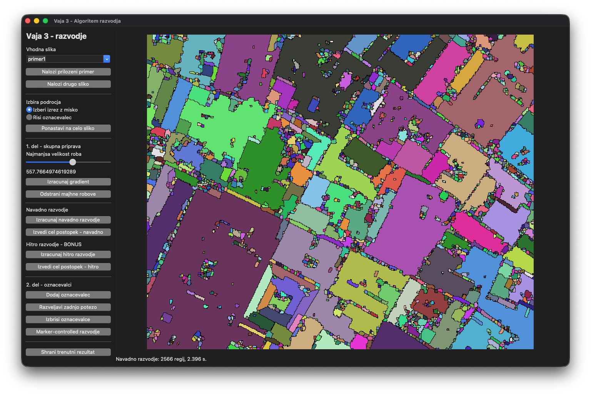
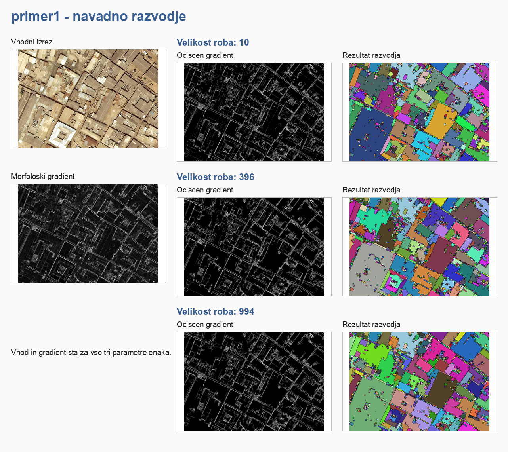
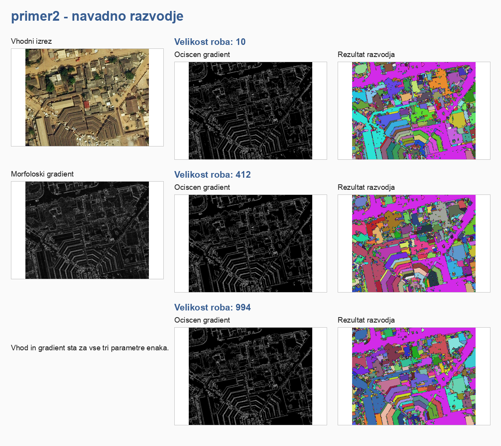
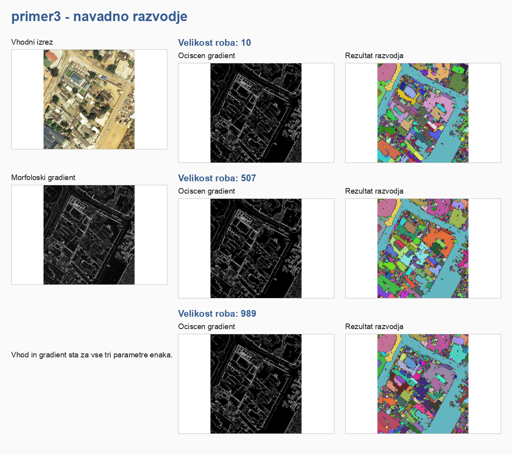
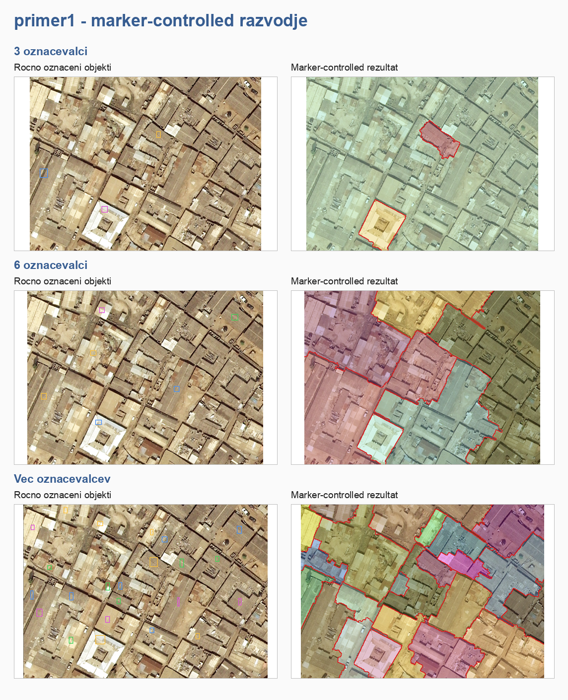
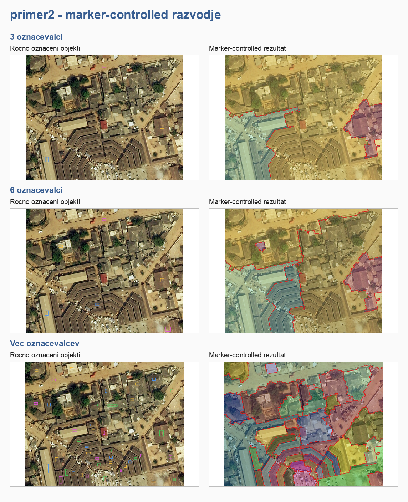
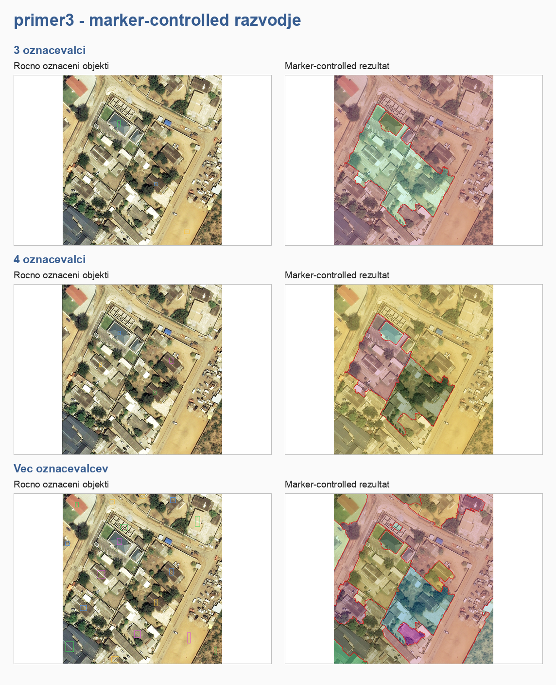
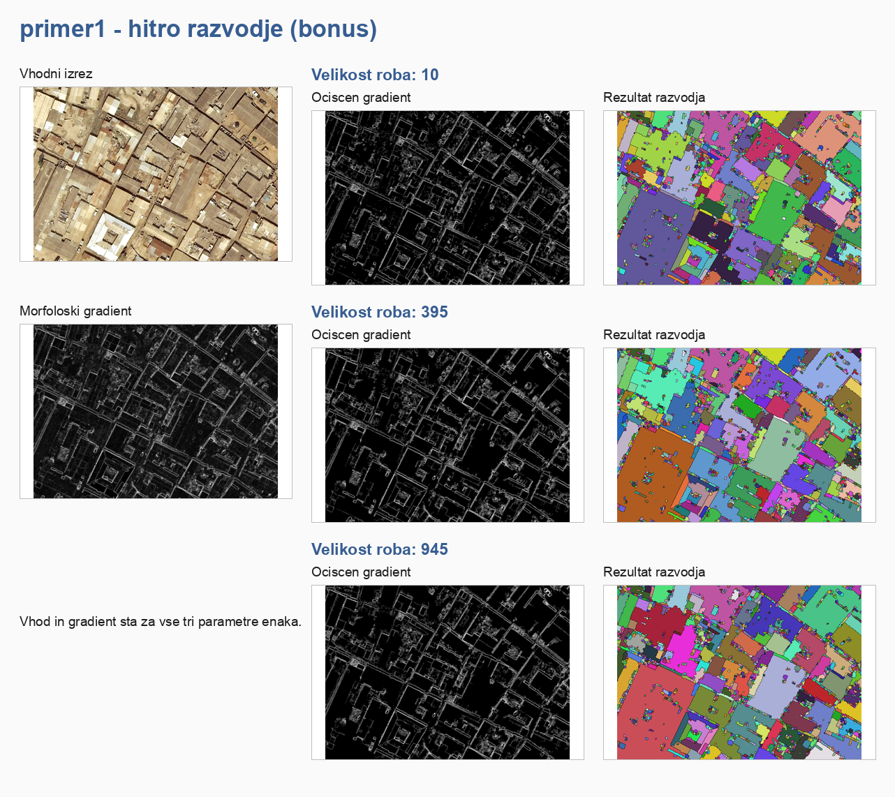
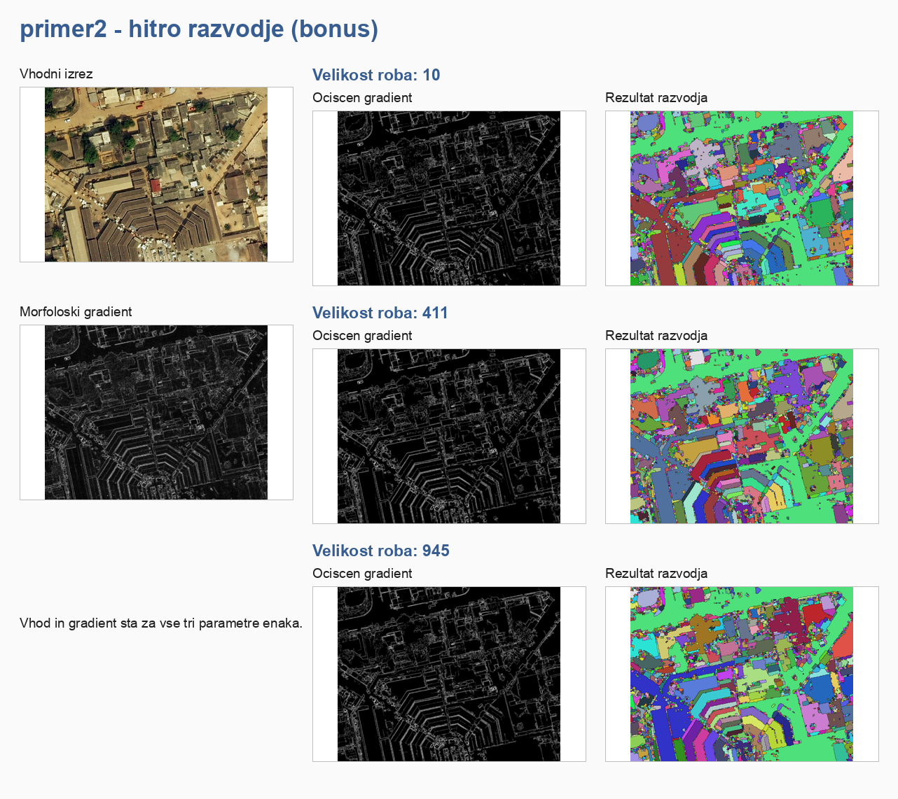
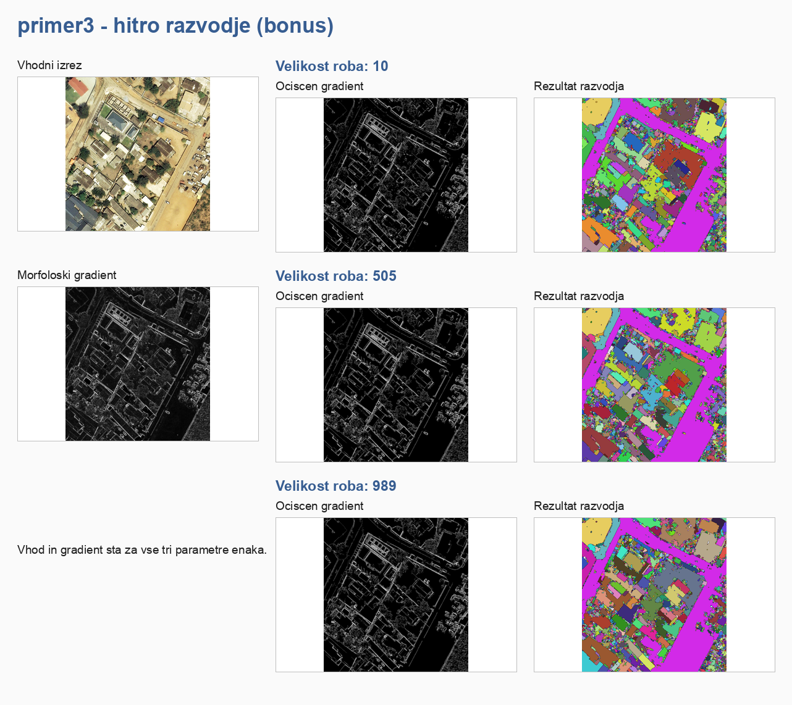

Watershed Segmentation Tool
I built a desktop app for testing watershed segmentation on three image examples. It includes regular watershed, marker-controlled watershed, and a faster version of the regular method.
Application
The app lets the user select an image, crop it, change the edge setting, add markers, and compare the output. I used it to save the results below.

Regular watershed
For each example, the grid shows the input, gradient, cleaned image, and final watershed result.



Marker-controlled watershed
Markers give the user control over which regions should be separated.



Faster watershed
I also implemented a faster version and compared it on the same three examples.


